There are 120 floors (sometimes called levels) in the Mines. Ore type and quantity increases as The Player
moves deeper into the Mines. The Mines are filled with rocks and dirt patches. Rocks can be mined with a
Pickaxe in order to obtain Stone, ore and Geodes. A Hoe can be used on dirt patches to collect Minerals,
Artifacts, ore, Clay, and Cave Carrots.
To advance deeper in the Mines, a ladder must be revealed on each floor. The ladder will appear after
breaking rocks or after defeating an enemy (killing enemies is the stamina-free option to finding ladders).
If a floor is "infested" or "overrun" by monsters, all enemies must be defeated on that floor before a
ladder will appear. (Note, however, that there is a bug that affects very few floors where a ladder will
drop before all enemies are killed.)
Passing out in the Mines from exhaustion (zero Energy) or when 2:00AM arrives will result in 10% of gold
lost up to a maximum of Gold.png1,000g. Passing out from drained Health will result in losing anywhere
between 5%-25% of gold (up to a maximum of 5,000gold) and also various inventory items, including
Weapons and Tools (except for the Galaxy Sword). If tools are lost, they are returned in the mail on the
following day, though Fishing Poles and weapons will not be returned. The character will awaken in the mine
entrance, found by one of the villagers.
Lost items can be recovered by contacting Marlon at the Adventurer's Guild. One lost item (or stack of
items) can be purchased there, any time after passing out due to low health. The price is the base sell
price of the lost item (i.e., the gold that would be obtained from selling one item or stack of items).
Marlon's Item Recovery Service persists until the next time the player loses items in the Mines, when
previously lost items are replaced by newly lost items.
A Minecart is located on the entry floor for quick travel to and from the mine. It is unlocked after
completing the Boiler Room Bundles or by purchasing "Minecarts" from the Joja Community Development Form at
JojaMart for 15,000gold.
Monsters in the Mines and the Skull Cavern are more dangerous during the Danger in the Deep and Skull Cavern Invasion quests, or while the Shrine of Challenge is toggled on. Dangerous monsters have unique sprites and stats. With few exceptions, their health, damage, and sometimes defense are higher, and their speed identical, when compared to their non-dangerous counterparts. Killing dangerous monsters earns the player the same amount of combat experience points as most of their non-dangerous counterparts. The Putrid Ghost, Skeleton Mage, and Shadow Sniper feature unique debuffs.
Mines |
||||
|---|---|---|---|---|
| All Floors | Floors 1-29 | Floors 31-39 | Floors 41-79 | Floors 81-119 |
|
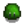
Slime |

Cave Fly 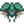Bug 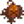Duggy 
Grub 
Rock Crab |

Bat 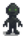Stone Golem |
Dust Sprite 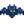Frost Bat 
Ghost 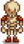Skeleton |

Lava Bat 
Lava Crab 
Metal Head 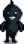Shadow Brute 
Shadow Shaman 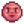Squid Kid |
 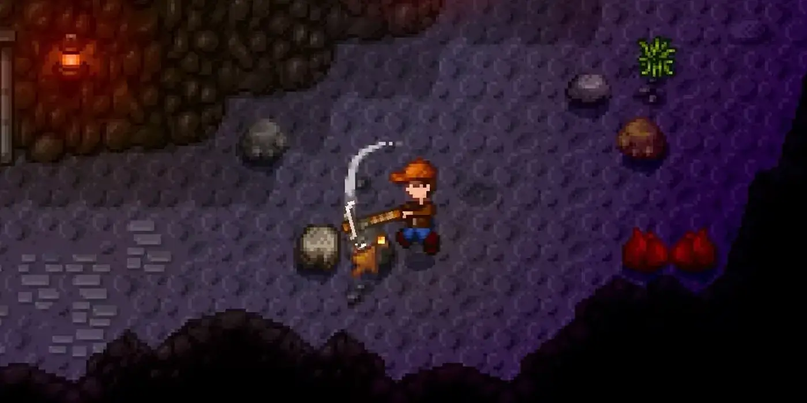
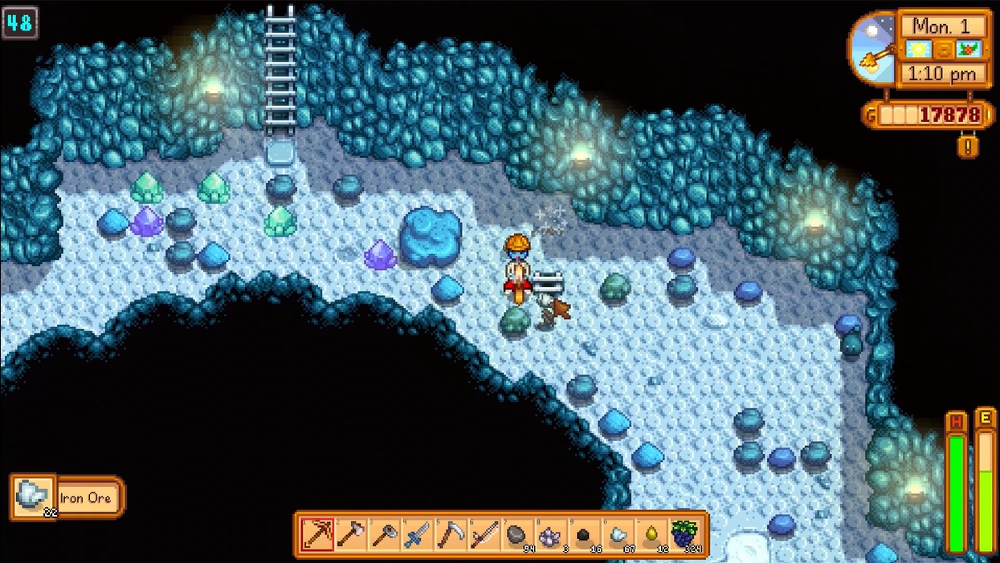
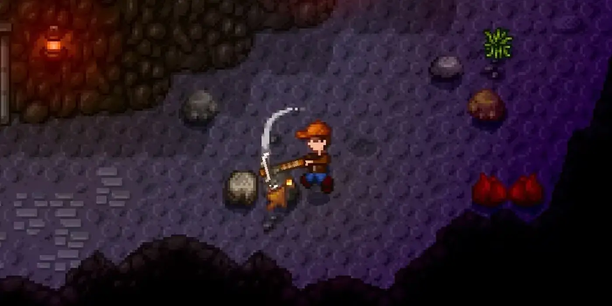
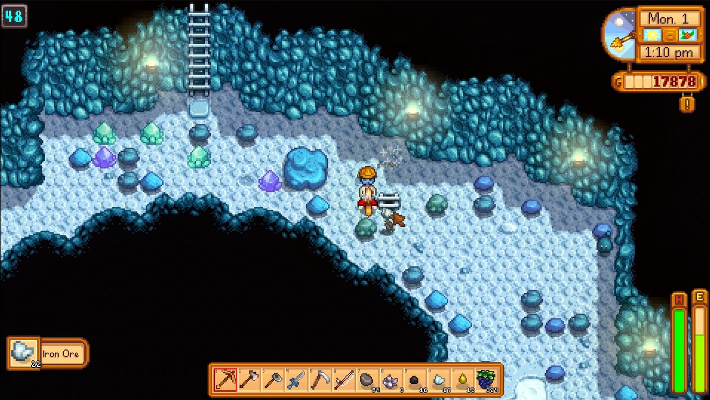